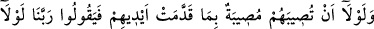
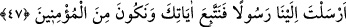
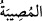
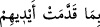
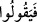
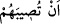

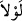
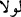
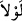
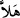
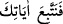
dilemeden önce size merhamet ettim.”
Himmeti yüce bu ümmetin mertebesi ne kadar büyüktür ki onlar Hz. Muhammed (a.s.)
ve Kur’an’la müjdelenmişlerdir. Hak Teâlâ lütfedip en güzel nimetleri bize verdi.
47. Bizzat kendi yaptıklarından dolayı başlarına bir musibet geldiğinde:
Rabbimiz! Ne olurdu bize bir peygamber gönderseydin de, âyetlerine uysak ve
müminlerden olsaydık! diyecek olmasalardı (seni göndermezdik).
Mekkelilerin “bizzat kendi yaptıklarından dolayı” yâni işledikleri küfür ve günahlar
sebebiyle “başlarına bir musibet geldiğinde:”
Buradaki “ (onlar)” zamiri, Mekke ehline râcîdir. “
(musîbet); cezâ ve belâ”
demektir. Râğıb Isfahânî der ki: Bu kelime, esasen okçulukta isâbet ettirmek
mânâsındadır. Daha sonra cezâ olarak başa gelen musîbetler mânâsına kullanılmıştır.
Yani, eğer onlar kendilerine bir musibet ulaştığında, diyecek olmasalardı, demektir.
“
” ifâdesinde takdim (yapma) işi ellere nisbet edilmiştir. Zira eller, amel
işlemede en kuvvetli vâsıta ve kendisinden en çok yardım görülen uzuvdur. “
(derler) ifâdesi, “
isâbet ettiğinde)” cümlesi üzerine matuftur ve imtinâiyye
mânâsına gelen “
”nın etki sâhasındadır. Şöyle ki; “
”nın cevabının mümtenî olması
-yâni peygamber gönderilmesi-, mâtûfun mümtenî olması anlamına gelir. Yâni artık
böyle bir mâzeret ileri sürmeleri imkansızdır. Yoksa musîbet isâbet etmeyişinin
(mâtûfun aleyhin) imkansızlığı (imtinâı) değildir. Bu mâtûfun “
”nın sâhasında
zikredilmesi, onların aşağıdaki şu sözlerine bir sebep teşkil ettiğini haber vermek
içindir:
Ey “Rabbimiz!” Bize niçin (Peygamber) göndermedin? “Ne olurdu bize” katından
mûcizelerle te’yid edilen “bir peygamber gönderseydin de,” onun elinde açıkça zuhur
eden “âyetlerine uysak ve müminlerden olsaydık! diyecek olmasalardı (seni
göndermezdik).”
Buradaki “
”; “
(haydi)” mânâsına gelen bir teşvik edâtıdır. Cevabı ise “
(âyetlerine uysak)” cümlesidir. Birinci “
”nın cevabı hâl karînesi ve delâleti
sebebiyle hazfedilmiştir.
Yani, işledikleri günahlar yüzünden başlarına bir musîbet inince böyle söylemeyecek
olsalardı; biz onlara seni peygamber olarak göndermezdik. Ancak bu vakitte, bu
sözlerini söylemeleri kesin olduğu için mâzeretlerini tamamen ortadan kaldırıp
aleyhlerine huccet olsun diye biz seni peygamber olarak gönderdik.